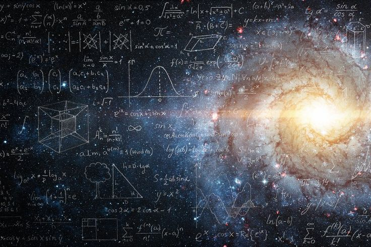

Math & Science
In a world that is often chaotic and deeply uncertain, Math and Science provide the ultimate grounding force. They do not rely on comforting illusions, beliefs, or subjective feelings; they rely entirely on observation, evidence, and undeniable proof.
As someone who values logic and analytical thinking, these subjects resonate with me perfectly. Math gives us a structured framework to solve complex problems, much like playing a game of chess or writing a block of code. It is an absolute truth—a calculation will always yield a logical result, regardless of human emotion.
Science, on the other hand, satisfies my need to question and understand. From studying the fundamental laws of physics defined by Isaac Newton to pondering the absolute mystery of a Black Hole, science is the honest pursuit of reality. It teaches us to look at the universe exactly as it is—vast, indifferent, and awe-inspiring.